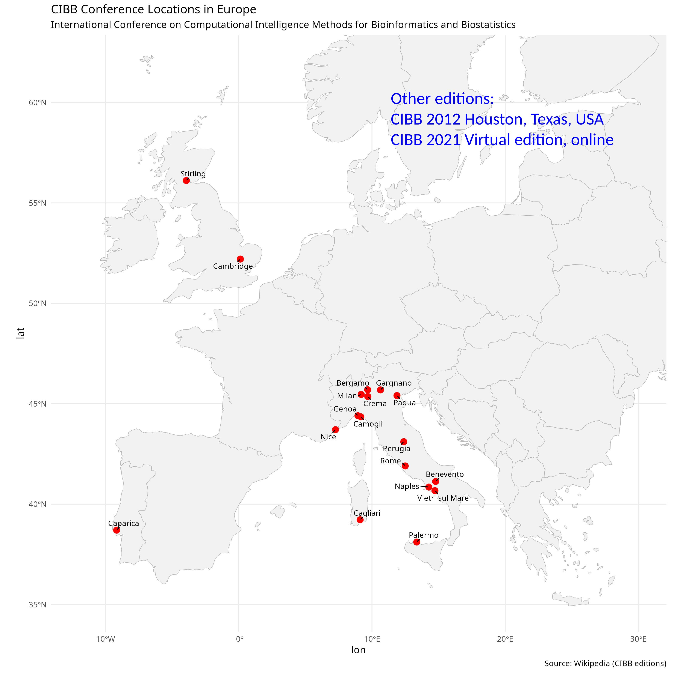

The International Meeting on Computational Intelligence Methods for Bioinformatics and Biostatistics (CIBB) conference series was founded in 2004 by Roberto Tagliaferri (Università di Salerno), Francesco Masulli (Università di Genova), and Antonina Starita (Università di Pisa), who formed its first steering committee.
The conference was initially established as a special session of the 14th Italian Workshop on Neural Networks (WIRN 2004), held in Perugia (Italy, EU). It continued as a special session within international conferences organized in Italy for the following three editions (WILF 2005, FLINS 2006, and WILF 2007).
Due to the large number and high quality of the papers submitted to the CIBB special sessions, the members of the steering committee decided to establish CIBB as an independent conference.
CIBB became an autonomous conference in October 2008, with its first independent edition held in Vietri sul Mare (Italy, EU), just a few months after the passing of its co-founder Antonina Starita (1939–2008), whose contributions were fundamental to the creation and development of the scientific meeting.
Since 2004, the CIBB conference series has produced 15 proceedings volumes, 4 proceedings sections, and 10 journal supplements, collectively containing approximately 450 peer-reviewed original scientific publications. To date, approximately 1,600 participants have attended CIBB conferences.
The upcoming CIBB 2026 international meeting, scheduled to be held in Rome (Italy, EU) in September 2026, will mark the 21st edition of the CIBB conference.
Future editions
We will then consider applications for the organization of the future edition of the conference (CIBB 2028). Would you like to host the CIBB 2028 edition at your university or research centre?
Or are you interested to help in the organization of the next CIBB conference edition, wherever it will be?
If yes, please send us an email at davidechicco(AT)davidechicco.it and let's talk about it.
Map of the CIBB conference locations in Europe.

Conference editions websites
Current edition
CIBB 2026, Rome, Italy (upcoming edition)
21st edition. Dates: 2–4 September 2026
General chairs: Umberto Ferraro Petrillo, Marta Cipriani, Roberta De Vito, Lorenzo Di Rocco
Keynote speakers: Per Kragh Andersen, Marianna Rapsomaniki, Nicola Segata
Location: Dipartimento di Scienze Statistiche, Sapienza Università di Roma, Rome, Italy, EU
Email contact: cibb2026(AT)uniroma1.it
Past editions
CIBB 2025, Milan, Italy
20th edition. Dates: 10–12 September 2025
General chairs: Silvia Cascianelli, Sofia Mongardi, Marco Masseroli
Keynote speakers: Valentina Boeva, Mats Julius Stensrud
Invited speakers: Natasa Przulj, Paulo Lisboa
Location: Building 3, Campus Leonardo, Politecnico di Milano, Milan, Italy, EU
CIBB 2024, Benevento, Italy
19th edition. Dates: 4–6 September 2024
General chairs: Francesco Napolitano, Luigi Cerulo
Keynote speakers: Michele Ceccarelli, Ruth Heller, Marieke Kuijjer
Invited speaker: Claudio Angione
Location: Dipartimento di Scienze e Tecnologie, Università del Sannio, Benevento, Italy, EU
CIBB 2023, Padua, Italy
18th edition. Dates: 4–6 September 2023
General chairs: Martina Vettoretti, Erica Tavazzi, Enrico Longato
Keynote speakers: Blaž Zupan, Arianna Dagliati, Jessica Barrett
Invited speakers: Davide Risso, Marco Beccuti, Marco Antoniotti
Location: Polo Multifunzionale di Psicologia, Università di Padova, Padua, Italy, EU
CIBB 2021, Online, virtual event
17th edition. Dates: 15–17 November 2021
General chairs: Davide Chicco, Angelo Facchiano, Margherita Mutarelli
Keynote speakers: Karsten Borgwardt, Ombretta Melaiu, André M Carrington, Stefano Tonzani, Olaf Wolkenhauer
Invited speaker: Dmytro Fishman
Web streaming platform: WeConf.eu
CIBB 2019, Bergamo, Italy
16th edition. Dates: 4–6 September 2019
General chairs: Paolo Cazzaniga, Ivan Merelli, Daniela Besozzi
Keynote speakers: M Luz Calle, Ana Cvejic, Uzay Kaymak
Invited speaker: Marco Masseroli
Location: ex Monastero di Sant'Agostino, Università di Bergamo, Bergamo, Italy, EU
CIBB 2018, Caparica, Portugal
15th edition. Dates: 6–8 September 2018
General chairs: Maria Raposo, Paulo Lisboa, Giorgio Valentini
Keynote speakers: Alberto Paccanaro, Alexandra Carvalho, Benoit Liquet, Fernando L Ferreira, Veronica Vinciotti
Location: Faculdade de Ciências e Tecnologia, Universidade Nova de Lisboa, Caparica, Portugal, EU
CIBB 2017, Cagliari, Italy
14th edition. Dates: 7–9 September 2017
General chairs: Massimo Bartoletti, Gunnar Klau, Leif Peterson
Keynote speakers: Alessandra Carbone, Valentina Boeva, Manja Marz
Location: Dipartimento di Ingegneria, Università di Cagliari, Cagliari, Italy, EU
CIBB 2016, Stirling, Scotland
13th edition. Dates: 1–3 September 2016
General chairs: Andrea Bracciali, David Gilbert, Gilbert MacKenzie
Keynote speakers: Mark Beaumont, Natalio Krasnogor, Antonietta Mira, Bud Mishra, Daniela Paolotti, Guido Sanguinetti
Location: Computer Science Division, University of Stirling, Stirling, Scotland
CIBB 2015, Naples, Italy
12th edition. Dates: 10–12 September 2015
General chairs: Claudia Angelini, Adriano Decarli, Erik Bongcam-Rudloff
Keynote speakers: Michele Ceccarelli, Dario Greco, Dirk Husmeier, Wessel van Wieringen
Location: Area Territoriale di Ricerca Napoli 1, Consiglio Nazionale delle Ricerche (CNR), Naples, Italy, EU
CIBB 2014, Cambridge, England
11th edition. Dates: 26–28 June 2014
General chairs: Clelia Di Serio, Pietro Liò, Sylvia Richardson, Roberto Tagliaferri
Keynote speakers: Monica Chiogna, Chris Holmes, Jean Michel Marin
Location: Computer Laboratory, University of Cambridge, Cambridge, England
CIBB 2013 (co-organized with PRIB 2013), Nice, France
10th edition. Dates: 20–22 June 2013
General chairs: Enrico Formenti, Ernst Wit, Roberto Tagliaferri
Keynote speakers: Anne Siegel, Ernst Wit, Sylvain Sené
Location: Château de Valrose, Nice, France, EU
CIBB 2012, Houston, Texas, USA
9th edition. Dates: 12–14 July 2012
General chairs: Leif Peterson, Francesco Masulli, Giuseppe Russo
Keynote speakers: Jim Bezdek, Elia Biganzoli, Douglas Robinson
Location: Methodist Hospital Research Institute, Houston, Texas, USA
CIBB 2011, Gargnano, Italy
8th edition. Dates: 30 June 30–2 July 2011
General chairs: Elia Biganzoli, Andrea Tettamanzi, Alfredo Vellido
Keynote speakers: Nikola Kasabov, Clelia Di Serio, Elena Marchiori
Location: Palazzo Feltrinelli, Gargnano, Italy, EU
CIBB 2010, Palermo, Italy
7th edition. Dates: 16–18 September 2010
General chairs: Paulo J Lisboa, Riccardo Rizzo
Keynote speakers: Raffaele Giancarlo, Paulo J Lisboa, Gianluca Pollastri
Location: Palazzo Comitini, Palermo, Italy, EU
CIBB 2009, Genoa, Italy
6th edition. Dates: 15–17 October 2009
General chairs: Francesco Masulli, Leif E Peterson, Roberto Tagliaferri
Keynote speakers: Gilles Bernot, Taishin Nomura
Location: Oratorio San Filippo Neri, Genoa, Italy, EU
CIBB 2008, Vietri sul Mare, Italy
5th edition. Dates: 3–4 October 2008
General chairs: Francesco Masulli, Roberto Tagliaferri, Gennady M Verkhivker
Keynote speakers: Mario Lauria, Nicolas Le Novere, Giorgio Valentini
Location: Istituto Internazionale per gli Alti Studi Scientifici, Vietri sul Mare, Italy, EU
CIBB 2007 (within WILF 2007), Camogli, Italy
4th edition. Dates: 7–10 July 2007
General chairs: Roberto Tagliaferri, Giorgio Valentini
Keynote speakers: Joaquin Dopazo, Sushmita Mitra
Location: Portofino Kulm Hotel, Camogli, Italy, EU
CIBB 2006 (within FLINS 2006), Genoa, Italy
3rd edition. Dates: 30 August 2006
General chairs: Francesco Masulli, Antonina Starita, Roberto Tagliaferri
Location: Starhotel President Hotel, Genoa, Italy, EU
CIBB 2005 (within WILF 2005), Crema, Italy
2nd edition. Dates: 15–17 September 2005
General chairs: Francesco Masulli, Antonina Starita, Roberto Tagliaferri
Keynote speakers: Pierre Baldi
Location: Dipartimento di Tecnologie dell'Informazione, Università Statale di Milano, Crema, Italy, EU
CIBB 2004 (within WIRN 2004), Perugia, Italy
1st edition. Dates: 14–15 September 2004
General chairs: Francesco Masulli, Antonina Starita, Roberto Tagliaferri
Location: Dipartimento di Matematica e Informatica, Università di Perugia, Perugia, Italy, EU